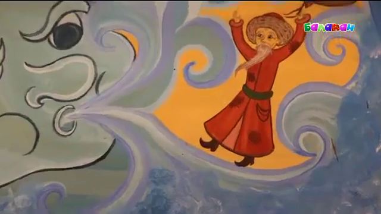

Разделение мифологических персонажей, способных к переменам формы и облика.
"Қанбак шал" - одна из главных сказок казахского народа. Произведение народного значения, воспитывающее молодое поколение к простоте, уму и честному труду. Сказка рассказывает о старике, который был настолько худеньким и легким, что самый слабый ветер сносил его с ног, и как траву, он катился по степи или падал в овраги. Поэтому его прозвали Канбак-шал - "перекати-поле". Впрочем, Канбак-шал был таким хитрым, что сумел перехитрить трёх одноглазых великанов.
Тазша Буквально: “плешивый, лысый”. Плешивый мальчик (тазша бала), один из распространенных персонажей казахской сказки. Тазша, обычно, объект насмешек или, наоборот, окружающие становятся объектом его насмешек и проделок. Представляется в виде мальчика или юноши, обладающего хитрым умом и сноровкой, в некоторых вариантах — он обладатель таинственного знания. Он плешивый. В генезисе Тазша - образ, связанный с потусторонними силами, является одним из воплощений потустороннего мира. Само понятие “плешивость”, как противопоставление “полосатости”, в древнейшем дуалистическом мифе относилось к потустороннему миру, миру мертвых или миру Духа-Предка или Духа-Праматери. Источник" "Казахская мифология" С.Кондыбай